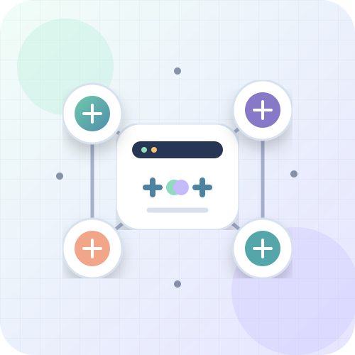
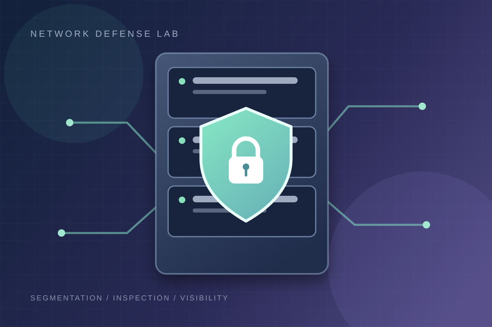

Inventory & classification
Organized account information by authentication type and operational purpose, helping distinguish local, centrally managed, and service identities.
Hey! I'm Reen, a network and security enthusiast. This is my personal playground for learning networking, building secure systems, and experimenting with real-world infrastructure challenges.

My flagship multi-VLAN firewall and intrusion detection sandbox 🎯

🛡️ Flagship LabA segmented virtualized lab network built to simulate enterprise perimeter defense. Features isolated VLANs for management, DMZ, and IoT traffic, stateful firewall rules, deep packet inspection (DPI), and centralized SIEM log forwarding.
Topics I focus on in my homelab and personal projects
OSPF, EIGRP, BGP multi-homing, Spanning Tree, EtherChannel, and inter-VLAN routing. Building redundant networks from the ground up.
Network packet analysis, detecting suspicious traffic, threat hunting, and responding to security alerts.
Encrypted VPN tunnels, limiting what users can access (principle of least privilege), and protecting data in transit.
A structured effort to improve privileged-account hygiene and make secure credential practices easier to follow across network environments.
Organized account information by authentication type and operational purpose, helping distinguish local, centrally managed, and service identities.
Reviewed ownership, access, and credential-lifecycle questions, then shaped follow-up work into clear, actionable remediation themes.
Created concise vault onboarding and usage references, distinguishing human-managed passwords from application-to-application secrets and automated rotation workflows.
Methodical asset review, least-privilege thinking, remediation planning, and clear security documentation—while keeping operationally sensitive details out of public materials.
This public summary omits organization names, device and account identifiers, network details, access-group names, and credentials.
I built Reen's Tech Vault to document my hands-on learning journey. It's a space where I explore networking concepts, build secure systems, and share what I'm discovering along the way.
What I've accomplished:
• CCNA 200-301 Certification: Routing, switching, subnetting, VLANs, and network fundamentals.
• CompTIA Security+ Certification: Security best practices, threat detection, cryptography, and identity management.
Connect With Me